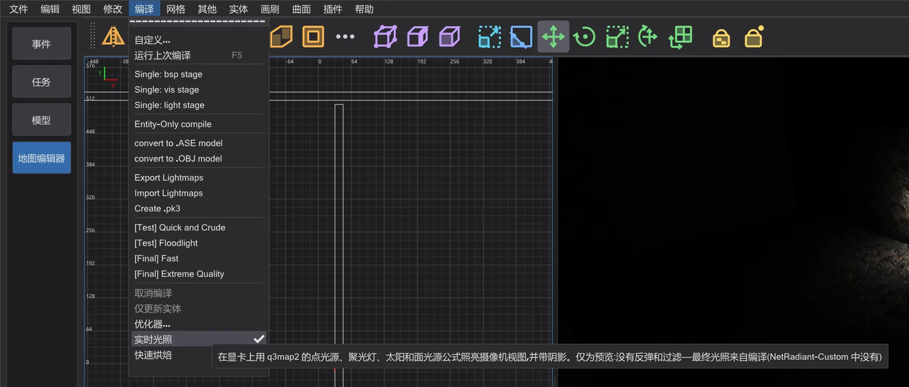
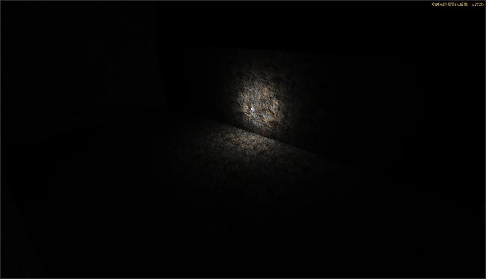
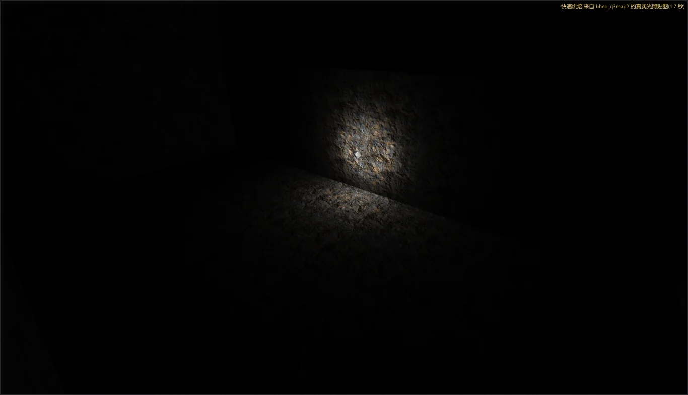

地图编辑器:速度与实时光照
边搭建边看光照:实时光照 在显卡上照亮摄像机视图,快速烘焙 在后台编译地图并显示真实的光照贴图。编译和编辑都变快了——结果与之前完全相同。
实时光照#

- 1
打开 编译 > 实时光照。摄像机(纹理渲染模式)会被地图中的光源照亮——点光源、聚光灯、天空着色器的太阳(
q3map_sun)和面光源(q3map_surfacelight)——使用 q3map2 -light 的公式,并带有阴影。 - 2
移动光源或修改其键值,摄像机会立即更新。每一帧最多由 64 个光源照亮(取对摄像机影响最强的),其中 32 个带阴影立方体。

快速烘焙#
- 1
打开 编译 > 快速烘焙。最后一次修改两秒后,bhed_q3map2 会在临时文件夹中以低优先级编译地图——
-meta、-vis -fast(地图没有泄漏时)和-light -fast——编辑器保持流畅。 - 2
完成后,摄像机显示这次编译的真实光照贴图,右上角显示 快速烘焙:来自 bhed_q3map2 的真实光照贴图( 秒)。任何修改都会取消正在进行的编译,并在暂停后重新开始。你的地图及其旁边的 .bsp 不会被改动。

快速烘焙写出的光照贴图、光照网格和可见性,与在命令行中用相同开关运行 bhed_q3map2 的结果完全相同——自检会比较这些文件。它之所以比完整编译快,是因为使用了 -fast 并且没有反弹过程;最终版本请使用 编译 菜单。
哪些变快了#
每项改动都在前后进行了测量(三次运行的中位数、低优先级、相同的地图),结果完全相同:-bsp 和 -light 生成的 .bsp 与第 6 阶段单线程编译的结果逐字节一致,保存的地图也完全相同。
- -light 在光照贴图(按光源分块计算,自适应超采样先预测再精确核对)和光照网格上使用所有核心。
- -bsp:T 形接缝修复并行搜索、按顺序应用;光照网格中相同的点通过分桶查找,而不是遍历所有点。
- -vis 保持与 NetRadiant-Custom 相同:多线程时每次编译可能略有不同,使用
-threads 1时总是相同。我们尝试并测量了两种让多线程结果一致的方法,两者都更慢。 - 编辑器:反选、视图的选择查询,以及优化器的 NPC 文件(在后台读取)。
| 步骤 | 地图 | NetRadiant-Custom | 之前(第 6 阶段) | 现在 |
|---|---|---|---|---|
| BSP (所有线程) | duel_pit | 0.20 s | 0.20 s | 0.20 s |
| VIS (所有线程) | duel_pit | 0.15 s | 0.10 s | 0.10 s |
| LIGHT (所有线程) | duel_pit | 0.66 s | 0.66 s | 0.61 s |
| BSP (1 线程) | duel_pit | 0.20 s | 0.20 s | 0.20 s |
| VIS (1 线程) | duel_pit | 0.15 s | 0.15 s | 0.15 s |
| LIGHT (1 线程) | duel_pit | 3.02 s | 3.33 s | 3.08 s |
| BSP (所有线程) | mp__duel1 | 0.36 s | 0.31 s | 0.31 s |
| VIS (所有线程) | mp__duel1 | 0.15 s | 0.11 s | 0.10 s |
| LIGHT (所有线程) | mp__duel1 | 2.53 s | 2.99 s | 1.92 s |
| BSP (1 线程) | mp__duel1 | 0.35 s | 0.31 s | 0.31 s |
| VIS (1 线程) | mp__duel1 | 0.20 s | 0.15 s | 0.16 s |
| LIGHT (1 线程) | mp__duel1 | 8.72 s | 9.68 s | 9.63 s |
| BSP (所有线程) | t1_inter | 0.31 s | 0.26 s | 0.26 s |
| VIS (所有线程) | t1_inter | 0.15 s | 0.10 s | 0.10 s |
| LIGHT (所有线程) | t1_inter | 0.31 s | 0.26 s | 0.31 s |
| BSP (1 线程) | t1_inter | 0.30 s | 0.25 s | 0.26 s |
| VIS (1 线程) | t1_inter | 0.15 s | 0.11 s | 0.10 s |
| LIGHT (1 线程) | t1_inter | 0.31 s | 0.31 s | 0.31 s |
| BSP (所有线程) | md_ch_ben | 0.81 s | 0.71 s | 0.76 s |
| VIS (所有线程) | md_ch_ben | 2.77 s | 2.27 s | 2.23 s |
| LIGHT (所有线程) | md_ch_ben | 3.73 s | 4.24 s | 2.58 s |
| BSP (1 线程) | md_ch_ben | 0.86 s | 0.71 s | 0.71 s |
| VIS (1 线程) | md_ch_ben | 30.53 s | 24.90 s | 24.60 s |
| LIGHT (1 线程) | md_ch_ben | 12.66 s | 12.65 s | 12.76 s |
| BSP (所有线程) | kejim_post | 4.74 s | 4.59 s | 4.14 s |
| VIS (所有线程) | kejim_post | 745.40 s | 621.47 s | 573.70 s |
| LIGHT (所有线程) | kejim_post | 9.18 s | 10.28 s | 7.21 s |
| BSP (所有线程) | duel_mos_espa | 53.35 s | 44.86 s | 19.57 s |
| 步骤 | 地图 | 之前(第 6 阶段) | 现在 |
|---|---|---|---|
| 反选(全选) | duel_mos_espa | 29.74 s | 5.2 ms |
| 反选(全选) | kejim_post | 1.34 s | 0.7 ms |
| 反选(全选) | md_am_sith | 1.36 s | 0.8 ms |
| 打开 .bsp(反编译) | duel_mos_espa | 7.71 s | 7.98 s |
| 打开 .bsp(反编译) | kejim_post | 2.01 s | 2.64 s |
| 打开 .bsp(反编译) | md_am_sith | 3.29 s | 3.42 s |
| 加载 .map | duel_mos_espa | 1.31 s | 1.29 s |
| 加载 .map | kejim_post | 662.5 ms | 717.4 ms |
| 加载 .map | md_am_sith | 805.6 ms | 827.7 ms |
| 纹理加载完成 | duel_mos_espa | 1.64 s | 1.80 s |
| 纹理加载完成 | kejim_post | 4.2 ms | 821.6 ms |
| 纹理加载完成 | md_am_sith | 1.93 s | 2.16 s |
| 保存 .map | duel_mos_espa | 815.8 ms | 745.4 ms |
| 保存 .map | kejim_post | 142.5 ms | 173.7 ms |
| 保存 .map | md_am_sith | 175.9 ms | 189.6 ms |
| 移动全部 | duel_mos_espa | 285.1 ms | 329.4 ms |
| 移动全部 | kejim_post | 53.2 ms | 72.0 ms |
| 移动全部 | md_am_sith | 62.9 ms | 68.0 ms |
| 撤销移动 | duel_mos_espa | 294.1 ms | 353.0 ms |
| 撤销移动 | kejim_post | 26.2 ms | 36.4 ms |
| 撤销移动 | md_am_sith | 33.3 ms | 32.6 ms |
| 撤销 CSG Subtract | duel_mos_espa | 171.1 ms | 207.4 ms |
| 撤销 CSG Subtract | kejim_post | 8.6 ms | 7.9 ms |
| 撤销 CSG Subtract | md_am_sith | 12.1 ms | 10.1 ms |
| 优化器启动 | duel_mos_espa | 48.6 ms | 39.2 ms |
| 优化器启动 | kejim_post | 10.2 ms | 13.1 ms |
| 优化器启动 | md_am_sith | 14.7 ms | 11.8 ms |
| 优化器检查 | duel_mos_espa | 1.47 s | 1.34 s |
| 优化器检查 | kejim_post | 162.4 ms | 201.8 ms |
| 优化器检查 | md_am_sith | 303.7 ms | 257.4 ms |
| 切换到地图编辑器直到游戏数据就绪 | - | 273.3 ms | 258.1 ms |
| 预览:准备场景(md_am_sith) | - | 1.44 s | 1.40 s |
| 预览:场景帧时间(平均) | - | 15.0 ms | 15.0 ms |
| 预览:自由飞行帧时间(平均) | - | 8.2 ms | 8.1 ms |
kejim_post 的“纹理加载完成”之前之所以这么快,只是因为第 6 阶段在这次运行中加载 Jedi Outcast 时没有其文件夹(0 个着色器,每个面都是替代图像——第 7 阶段修复的错误);现在会加载 1187 个着色器及其图像。未改动的步骤每次运行的波动约为 20%。